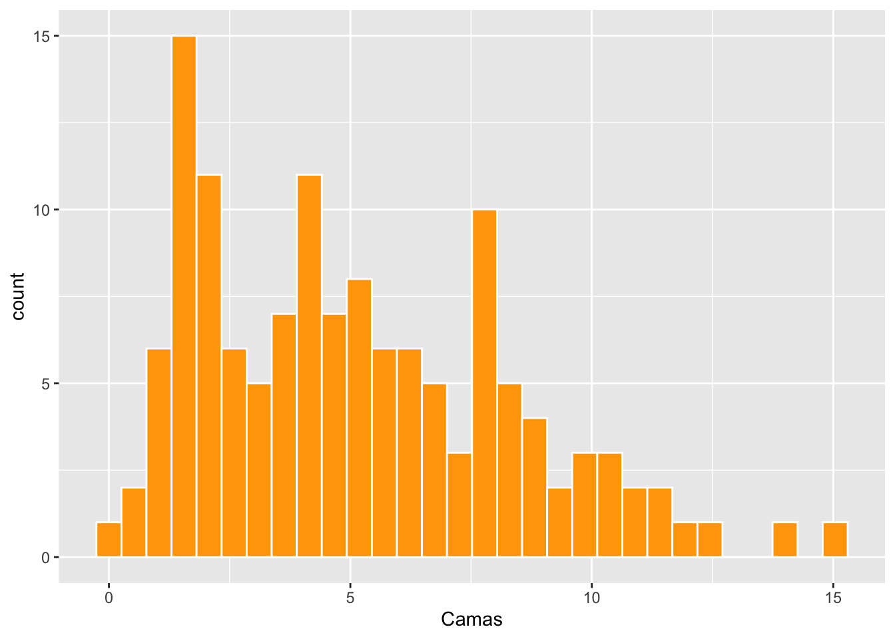
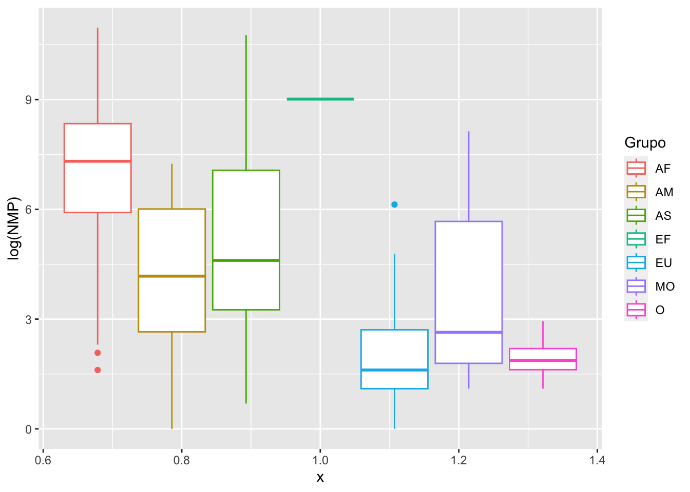

Trabajar con funciones R básico
Hacer análisis de tendencia central y dispersión
Preparar gráficos básicos con ggplot2
Organizar un documento en RMarkdown que este bien organizado y profesional
Salvar su documento en .html, y subir este documento en MSTeam
library(ggversa)Pais = Países del mundo
Year = El año del los datos
Población = El tamaño poblacional de este país
Camas = El número de camas por 1,000 habitantes
head(Camas_Hospital)| Pais | Year | Poblacion | Camas |
|---|---|---|---|
| Armenia | 1996 | 3173425 | 7.13 |
| Australia | 1996 | 18311000 | 8.5 |
| Austria | 1996 | 7959017 | 9.3 |
| Azerbaijan | 1996 | 7763000 | 9.81 |
| Bahamas, The | 1996 | 283792 | 3.94 |
| Barbados | 1996 | 265940 | 7.56 |
tail(Camas_Hospital)| Pais | Year | Poblacion | Camas |
|---|---|---|---|
| Turkey | 2006 | 68704721 | 2.7 |
| Turkmenistan | 2006 | 4801594 | 4.33 |
| Ukraine | 2006 | 46787750 | 8.7 |
| United States | 2006 | 298379912 | 3.1 |
| Uruguay | 2006 | 3331041 | 2.9 |
| Yemen, Rep. | 2006 | 21093973 | 0.7 |
length(Camas_Hospital$Camas)## [1] 134mean(Camas_Hospital$Camas)## [1] 5.11237median(Camas_Hospital$Camas)## [1] 4.7library(statip)
mfv(Camas_Hospital$Camas)## [1] 1.3library(ggplot2)
ggplot(Camas_Hospital, aes(Camas))+
geom_histogram(colour="white", fill="orange")## `stat_bin()` using `bins = 30`. Pick better value with `binwidth`.
library(tidyverse)
Datos2006 =
Camas_Hospital %>%
filter(Year=="2006")head(Datos2006)| Pais | Year | Poblacion | Camas |
|---|---|---|---|
| Armenia | 2006 | 3002161 | 4.4 |
| Australia | 2006 | 20697900 | 3.97 |
| Austria | 2006 | 8268641 | 7.65 |
| Azerbaijan | 2006 | 8484550 | 8.1 |
| Bahamas, The | 2006 | 335801 | 3.2 |
| Barbados | 2006 | 275040 | 6.6 |
quantile(Datos2006$Camas, probs = c(0.05, 0.10, 0.25, 0.50, 0.75, .90, .95))## 5% 10% 25% 50% 75% 90% 95%
## 1.0000 1.3000 2.2650 4.3331 6.5500 8.0400 8.6820es_a= sd(Datos2006$Camas)/sqrt(length(Datos2006$Camas))
es_a## [1] 0.3447128Limite_inferior_a=mean(Datos2006$Camas)-(es_a*1.96)
Limite_superior_a=mean(Datos2006$Camas)+(es_a*1.96)
Limite_inferior_a # limite inferior 95%## [1] 3.936715mean(Datos2006$Camas) # El promedio## [1] 4.612352Limite_superior_a # el limite superior 95%## [1] 5.287989Explica por que la mediana y el promedio del número de camas por habitantes no son iguales
Calcula el intervalo de confianza de 68.2% de los datos (no del promedio) - Vea la presentación de Medidas de dispersión
Limite_inferior_pop=mean(Datos2006$Camas)-sd(Datos2006$Camas)
Limite_superior_pop=mean(Datos2006$Camas)+sd(Datos2006$Camas)
Limite_inferior_pop # limite inferior 68.5%## [1] 1.790757mean(Datos2006$Camas) # El promedio## [1] 4.612352Limite_superior_pop # el limite superior 68.5%## [1] 7.433948en el paquete ggversa
Definición de las variables
El archivo incluye 5 columnas con 156 filas, los datos provienen del World Development Indicators, 07_22_2016.
NMI = Número de Muertes de Infantes, Niños que mueren en el parto o natimuerto
NMP = Número de Muertes por Parto, las madres que mueren al parir
GSPC = El en Salud per Cápita, gasto aportado a la salud por persona
Grupo = Región del mundo, AM = America, AF = Africa, AS = Asia, EU = Europa, MO = Medio Oriente, O = Oceania (EU) (el grupo EF/ ese es un error)
País = El nombre del pais
Haga un gráfico de “histograma”Box plot” del log(NMP) dividio por Región del Mundo
ggplot(PartosInfantes, aes(x=1,y=log(NMP), colour=Grupo))+
geom_boxplot() ## Warning: Removed 2 rows containing non-finite values (stat_boxplot).
#PartosInfantes |>
# filter(Grupo=="EF")Contesta la siguiente pregunta.
En que continente la mediana de madre muere a dar a parto es el mayor? (Excluye el grupo EF/ ese es un error)
En que continente la mediana de madre que muere a dar a parto es segundo mejor (menos muertes)?
Los datos provienen de este sitio: https://en.wikipedia.org/wiki/List_of_buildings_with_100_floors_or_more
#The tallest building in the world, el numero de pisos
library(gt)
df=tribble(
~ "Numeros de Pisos", ~"País",
163, "United Arab Emirates",
128, "China",
128, "China",
123, "South Korea",
120, "Saudi Arabia",
128, "Malaysia"
)
gt(df)| Numeros de Pisos | País |
|---|---|
| 163 | United Arab Emirates |
| 128 | China |
| 128 | China |
| 123 | South Korea |
| 120 | Saudi Arabia |
| 128 | Malaysia |
Fecha: Hora limite:
El trabajo es individual - No pueden PREGUNTAR a nadie por ayuda (Pueden preguntar a mi por ayuda)….. Si se escucha de una persona que no sigue esta regla el examen será anulado por TODOS. y será ofrecido en la clase….